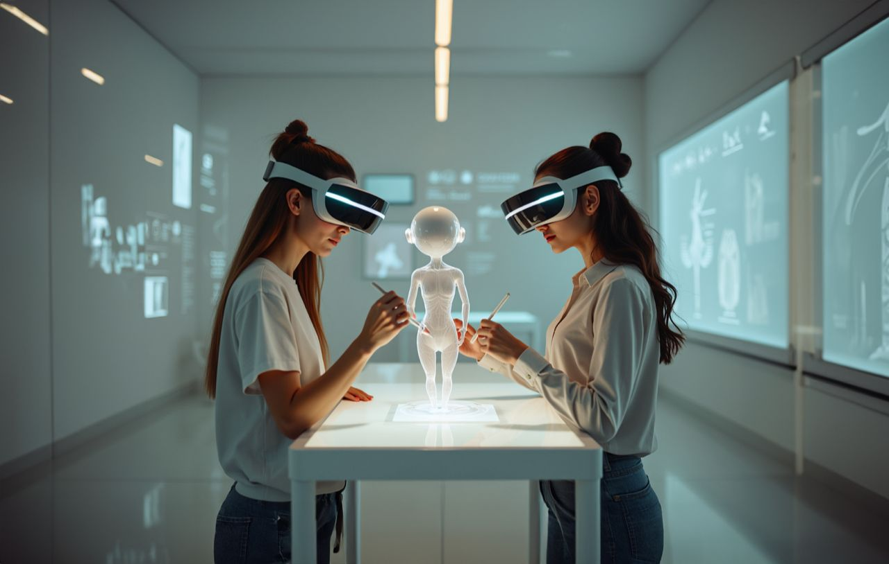

Résidence Explore / Fiche résidence
Salar Shahna
XR et IADirty Bacon Productions
Trois projets en résidence, à la frontière de la XR, du cinéma et de l'IA.

Les projets
01SensoryX Creative
Les applications créatives du suivi de mouvement en XR et des outils spatiaux.
02Relife
Une expérience introspective pilotée par l'IA, qui mêle film et réalité virtuelle.
03Kitchen XR Training
Un programme pour donner aux professionnels de l'audiovisuel des compétences avancées en XR.
Ce que la résidence a produit
« La résidence m'a permis de construire un nouveau workflow, de faire émerger de nouveaux projets autour d'une plateforme, et de nourrir tout cela au contact des autres résidents. »
Depuis, sa structure Dirty Bacon Productions conçoit le programme Progress AI et en écrit le scénario fil rouge.